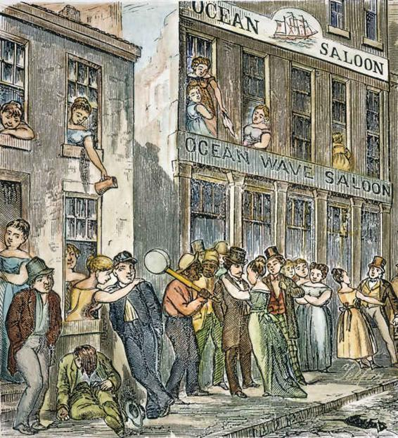
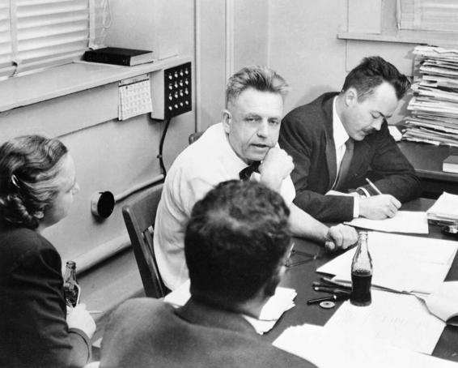

Just as particular diseases have been subject to (or spared from) stigmatization throughout history, sexual behavior has also been judged as “normal” or not across differential sociohistorical contexts. Western attitudes toward sexual behavior were for nearly 2,000 years molded primarily by Christianity, whose dominant view was that all sexual behavior is suspect except that needed for reproduction. During some periods, this view produced an extreme prudishness, but at other times, many people ignored the church’s teachings and engaged in practices such as adultery. The idea that sexual fulfillment can and should be sought through marriage was rare.
Sexual hypocrisy abounded in the Victorian era. Virtuous women were said to be indifferent to sexuality, while it was acceptable for their husbands to visit prostitutes or keep mistresses. This 1878 illustration of the St. Louis red-light district shows that prostitution was openly tolerated.
In the nineteenth century, religious presumptions about sexuality were partly replaced by medical ones. Most early writings by doctors about sexual behavior, however, were as stern as the views of the church. Some argued that any type of sexual activity unconnected with reproduction would cause serious physical harm. Masturbation was said to cause blindness, insanity, heart disease, and other ailments, while oral sex was claimed to cause cancer.
In Victorian times, sexual hypocrisy abounded. Many Victorian men—who appeared to be sober, well-behaved citizens, devoted to their wives—regularly visited prostitutes or kept mistresses. Such behavior was accepted, whereas “respectable” women who took lovers were regarded as scandalous and shunned in polite society. Virtuous women were believed to be indifferent to sexuality, accepting their husbands’ advances only as a duty. The differing attitudes toward the sexual activities of men and women formed a double standard, which persists today.
Currently, traditional attitudes exist alongside much more permissive attitudes, which developed especially rapidly in the 1960s. Some people, particularly those influenced by Christian teachings, believe that premarital sex is wrong; they frown on all forms of sexual behavior except heterosexual activity within marriage—although it is now more commonly accepted that sexual pleasure is an important feature of marriage. Others approve of premarital sex and tolerate different sexual practices.
Sexual attitudes have undoubtedly become more permissive over recent decades in most parts of the world, although some behaviors remain consistently more acceptable than others. For example, the proportion of Americans saying that premarital sex is “always wrong” dropped from 34 percent in 1972 to 20 percent in 2016. By contrast, disapproval of extramarital sex has remained consistently high and even increased during that same period. The proportion of Americans saying that extramarital sex is “always wrong” increased from 69 to 75 percent between 1973 and 2016 (Smith et al., 1972–2016).
Early Research on Sexual Behavior: Kinsey’s Study
Much of what we know about human sexuality in the twentieth century is due to the pathbreaking research of pioneering scientist Alfred Kinsey. When Kinsey began his research in the United States in the 1940s and 1950s, it was the first major scientific investigation of sexual behavior. Kinsey and his collaborators (1948, 1953) faced condemnation from religious organizations, and his work was denounced in the newspapers and in Congress as immoral. But he persisted, thus making his study the largest rigorous study of sexuality at that time, although his sample was not representative of the overall American population.
Kinsey’s results were surprising because they revealed a tremendous discrepancy between prevailing public expectations of sexual behavior and actual sexual conduct. He found that almost 70 percent of men in his study had visited a prostitute and 84 percent had had premarital sexual experience. Yet, following the double standard, 40 percent of men expected their wives to be virgins at the time of marriage. More than 90 percent of men had engaged in masturbation and nearly 60 percent in oral sexual activity—activities that were frowned upon (and never discussed publicly) at that time. Among women, about 50 percent had had premarital sexual experiences, although mostly with the man whom they eventually married. Some 60 percent had masturbated, and the same percentage had engaged in oral-genital contact.
Dr. Kinsey’s (center) pathbreaking research into sexual behavior in the 1940s and 1950s revealed a large discrepancy between publicly accepted attitudes and actual sexual conduct.
The gap between publicly accepted attitudes and actual behavior was probably especially pronounced just after World War II, the time of Kinsey’s study. A phase of sexual liberalization had begun in the 1920s, when many younger people felt freed from the strict moral codes that had governed earlier generations. Sexual behavior probably changed, but issues concerning sexuality were not openly discussed. People participating in sexual activities that were still strongly disapproved of on a public level concealed them, not realizing that others were engaging in similar practices behind closed doors. The more permissive 1960s brought openly declared attitudes more into line with the realities of behavior. As we will see in subsequent sections, as research methods have improved, social scientists have been able to get a more accurate handle on adult sexual behavior. Yet, as we will also see, the more things change, the more they stay the same. Even in the twenty-first century, some sexual behaviors continue to be judged harshly as “not normal,” and some individuals continue to face stigmatization and discrimination due to their sexual behavior and preferences.
CONCEPT CHECKS
Describe how the primary causes of death have changed between colonial times and the present day.
How do functionalist theorists and symbolic interactionists differ in their perspectives on health and illness?
Describe several changes in sexual practices over the past two centuries.
What are the most important contributions of Alfred Kinsey’s research on sexuality?